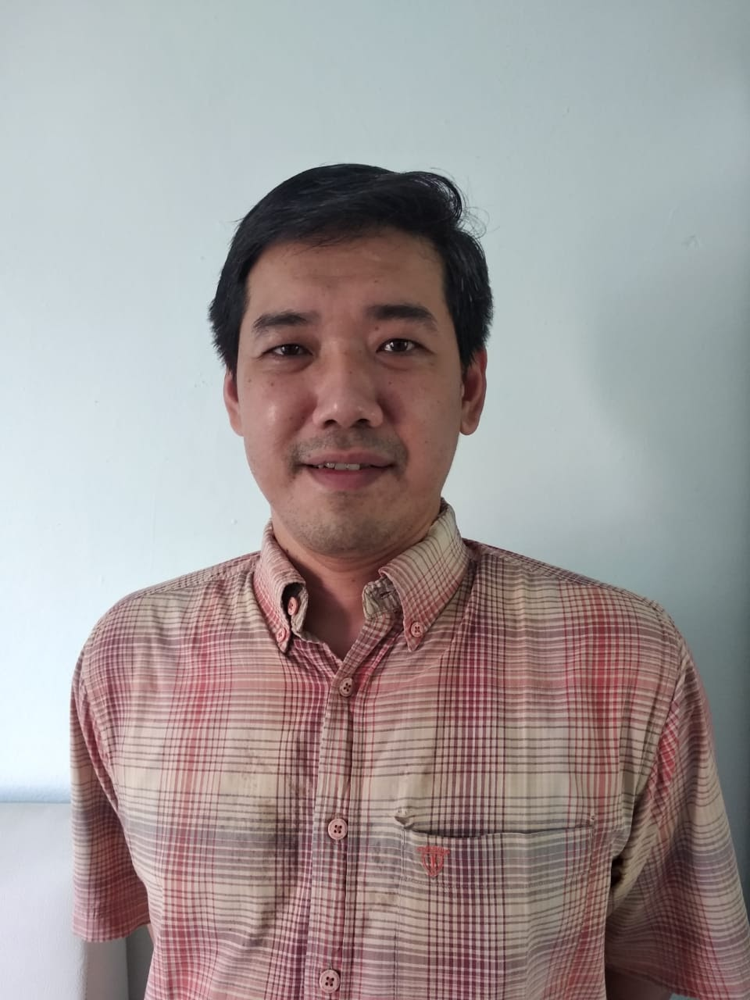

Information System


Ronny Juwono is the head of the Information Systems Study Program and an experienced lecturer with Information System Design and Analysis and E-Learning Technology expertise.

Acting as an active lecturer, Rikip Ginanjar focuses his lecture on system and network.
Sandy Darmowinoto is a system analyst with expertise in analysis, design, and implementation of Information System.